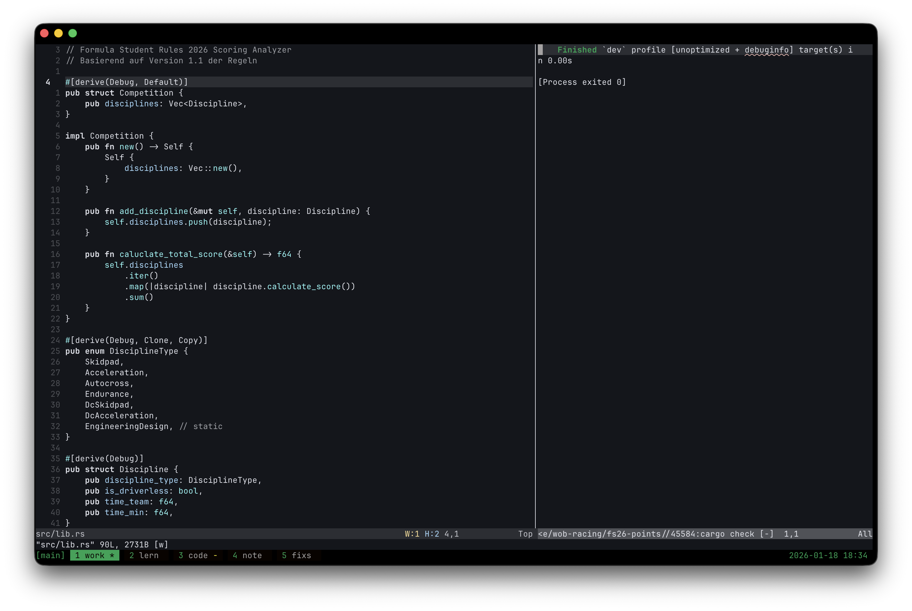

neovim compiler
Last modification:

Why this "plugin"?
- fast compiles with both compiler output and source in view.
- neovim based view splitting without dependencies
- just some fun
Special cases
Because I code in Java and Java imao no clearly defined (aka. dev-group dependent) workflow for libs has, I choose to trigger the execution of `./java.meta.sh` just a file which the executable shell command to compile the project.Location in project:
linus@hostname: ~/.config/nvim $ tree
.
├── init.lua
├── ...
├── lua
│ └── linus
│ ├── ...
│ ├── plugins
│ │ └── ...
│ ├── mini-scripts.lua
│ └── term.lua
Code:
mini-scripts.lua
// .config/nvim/lua/linus/mini-scripts.lua
local term_utils = require("linus.term")
------------------------ General -------------------------
vim.keymap.set("n", "<leader>cx", function()
term_utils.CloseTerminal()
end, { desc = "TERM: Close compile split" })
-------------------------- Rust --------------------------
vim.keymap.set("n", "<leader>cr", function()
term_utils.TerminalSplitRight("cargo run", 40)
end, { desc = "RUST: 40% R-Split & Run: cargo run" })
-------------------------- Java --------------------------
vim.keymap.set("n", "<leader>cj", function()
term_utils.TerminalSplitRight("./java.meta.sh", 40)
end, { desc = "JAVA: 40% R-Split & Run: ./java.meta.sh" })
term.lua
// .config/nvim/lua/linus/term.lua
local M = {}
local last_terminal_window = nil
--- Öffnet ein vertikal geteiltes Terminalfenster rechts mit 40% Breite
--- und führt den angegebenen Shell-Befehl aus.
--- @param command string Der Shell-Befehl, der ausgeführt werden soll.
---
function M.TerminalSplitRight(command, width_percent)
if last_terminal_window and vim.api.nvim_win_is_valid(last_terminal_window) then
vim.api.nvim_win_close(last_terminal_window, true)
end
local percent = width_percent or 40
local width_factor = percent / 100
vim.cmd("vertical split")
vim.cmd("wincmd L") -- Verschiebe das neue Fenster ganz nach rechts
last_terminal_window = vim.api.nvim_get_current_win() -- Speichert window
-- 'columns' ist eine globale Option in Neovim.
local target_width = math.floor(vim.o.columns * width_factor)
vim.cmd("vertical resize " .. target_width)
-- 3. Befehl ausführen
vim.cmd("terminal " .. command)
end
function M.CloseTerminal()
if last_terminal_window and vim.api.nvim_win_is_valid(last_terminal_window) then
vim.api.nvim_win_close(last_terminal_window, true)
last_terminal_window = nil
else
print("Kein aktives Terminal-Fenster gefunden.")
end
end
return M